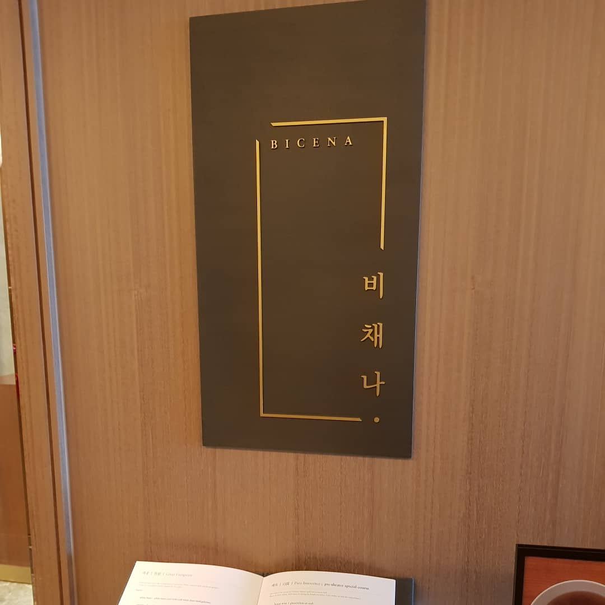
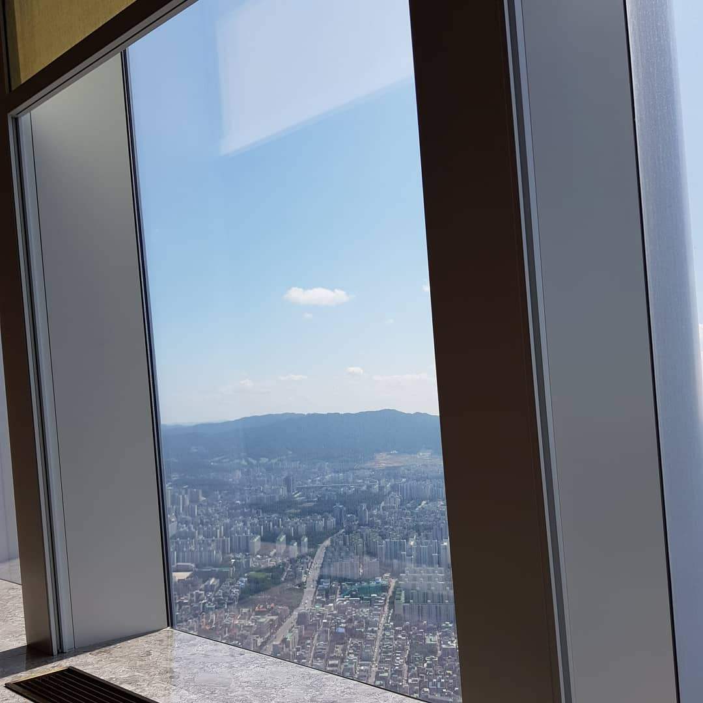
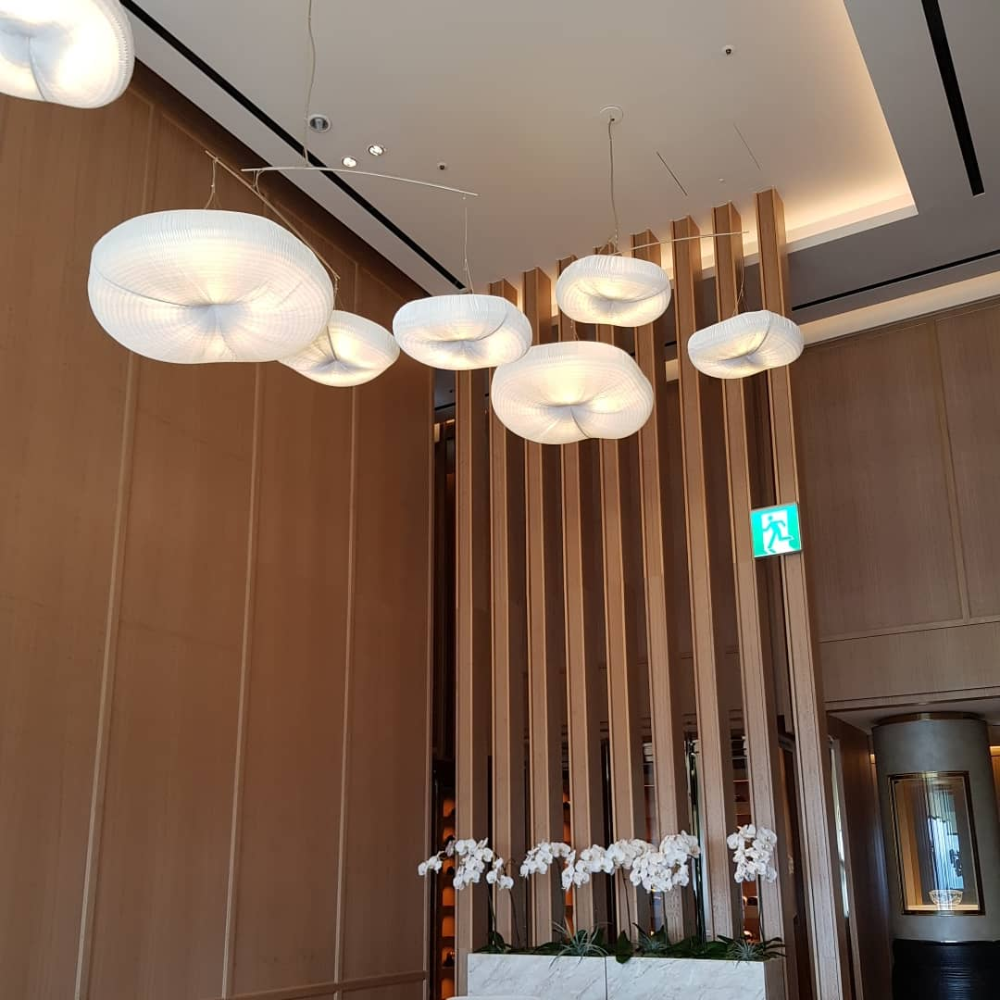
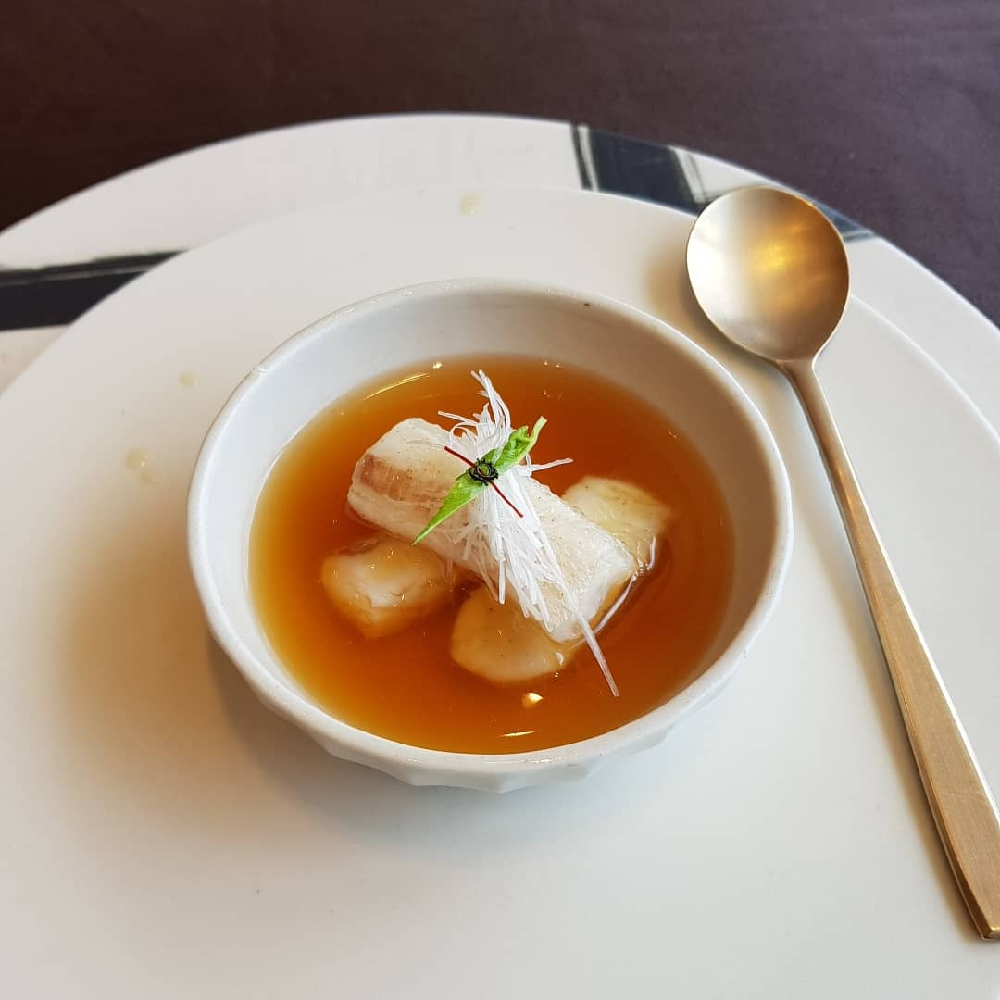
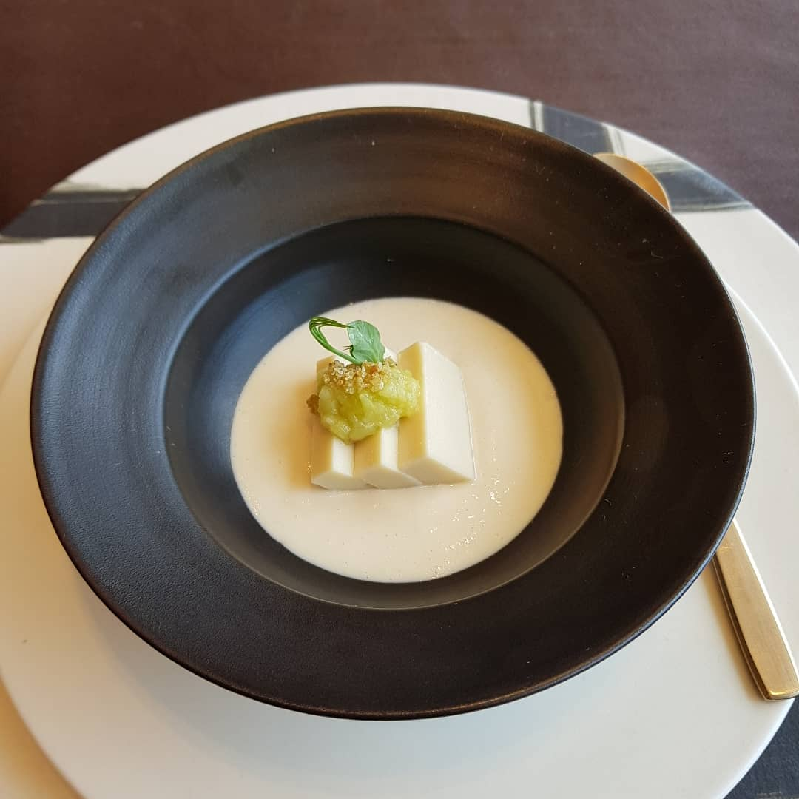
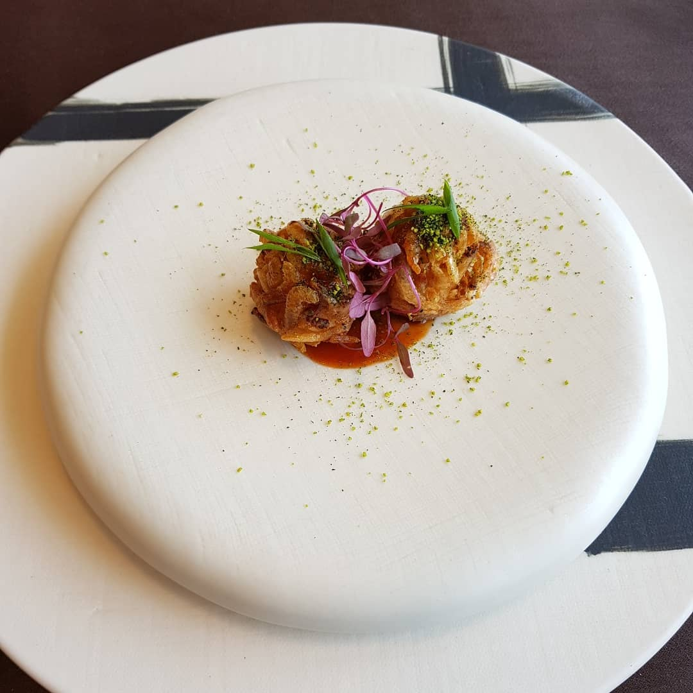
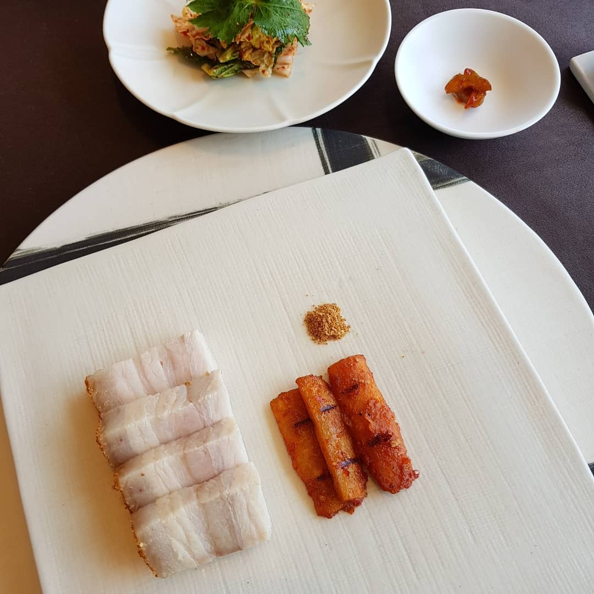
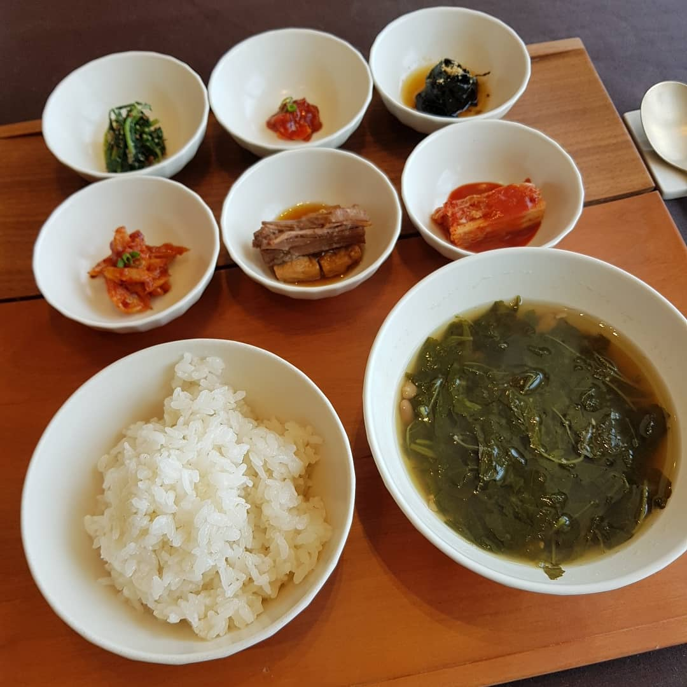
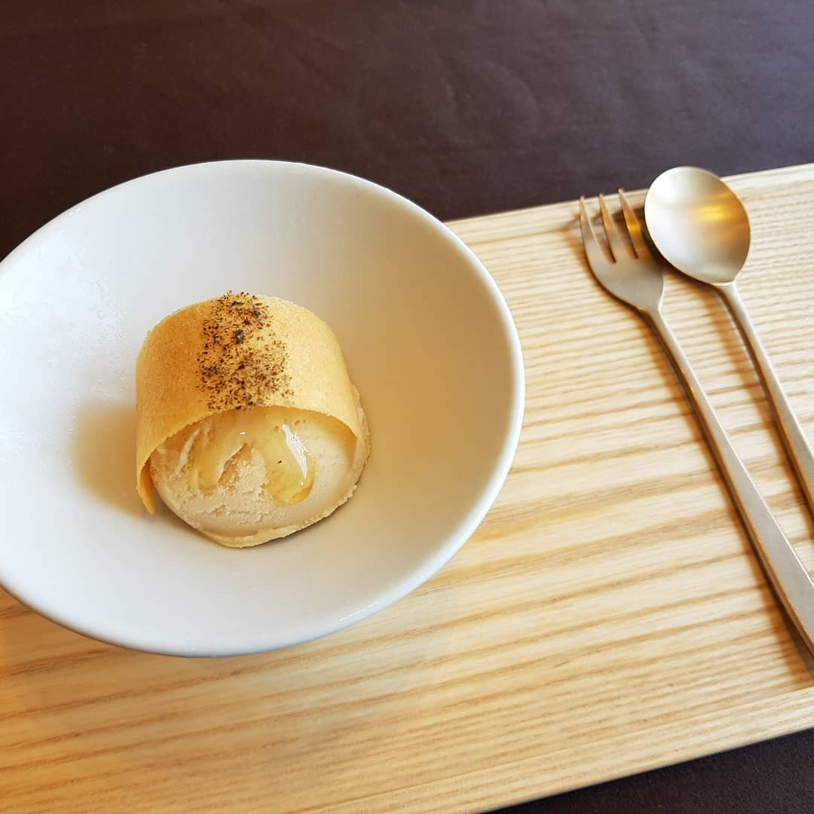
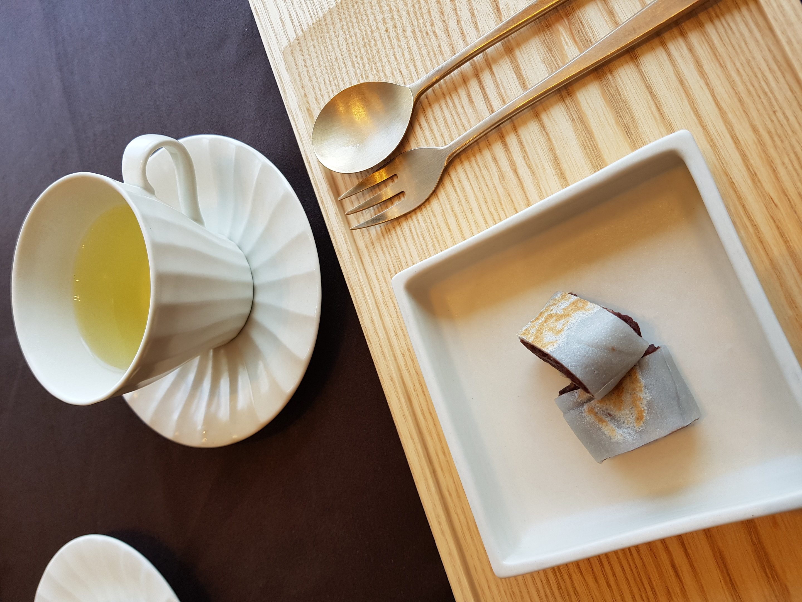

롯데타워잠실 시그니엘 호텔 81층에 있는 레스토랑 비채나 81층 뷰가 궁금해서 댕겨왔습니다 :3



콩: 백태를 갈아 만든 ‘콩묵’과 부드럽고 시원한 ‘콩즙’젤 맘에들었던 요리// 마시쏘
새우: 새우살을 으깨어 만든 완자에 보리새우로 튀김옷을 입힌 ‘새우강정’이건 맛이없을수가 없당 ㅋㅋㅋㅋㅋ



주말 런치 인기 많은가봐요;;8월1일에 예약하려 전화했는데 주말런치는 9월1일 하나 비어있다고해서 놀랐어용;;;메인은 평범했고 앞에 나온 세가지 요리가 맘에듭니다.디저트도 괜찮았구요일하시는분들도 트레이닝 잘 받았다는 생각이 듭니다 :3전반적으로 고민많이했고 신경많이 썼다 - 라는걸 알수있었습니다기분좋은 식사였어요 :)